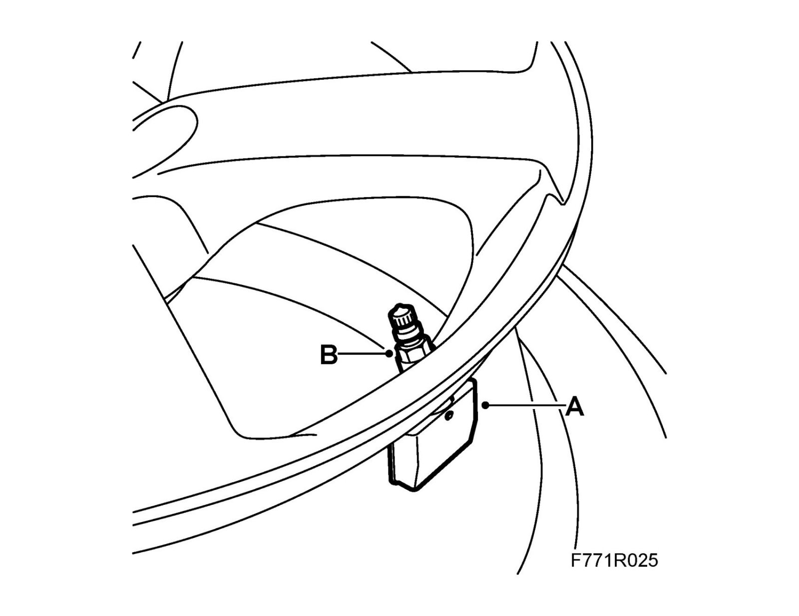

Pressure Sensor, Tire Pressure
Pressure sensor, tire pressureTo remove
1. Remove the wheel.
2. Remove the tire.
3. Remove the sensor (A) by undoing the nut (B), then lift out the sensor.

To fit
1. Fit the sensor with new rubber seal in the hole in the wheel rim.
2. Counterhold the sensor (A) when the nut (B) is fitted.
Tightening torque: 10 Nm (7.5 lbf ft)
3. Fit the tire.
4. Fit the Wheel.
5. Connect Tech2 and follow the instructions under Chassis - TPMS for programming the new pressure sensor.